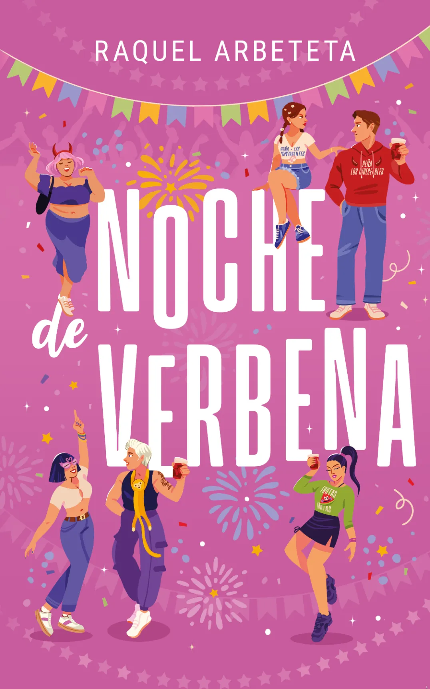
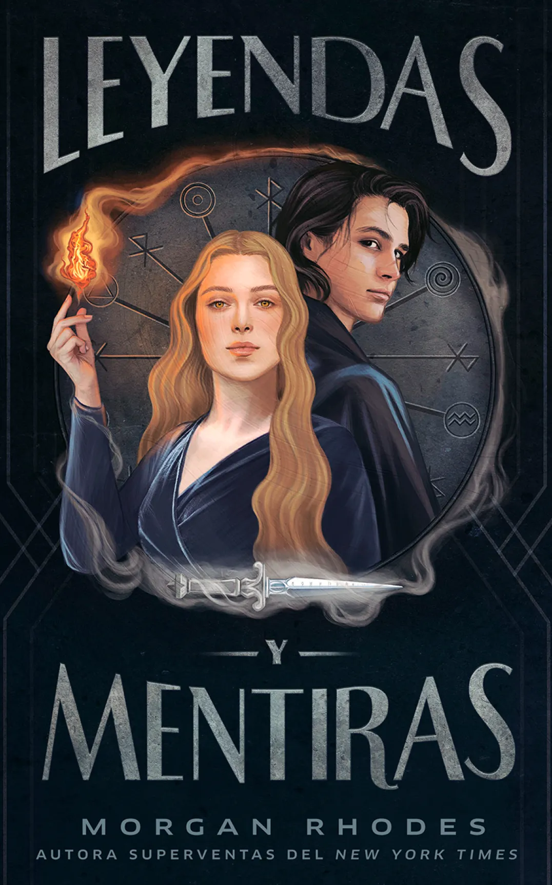
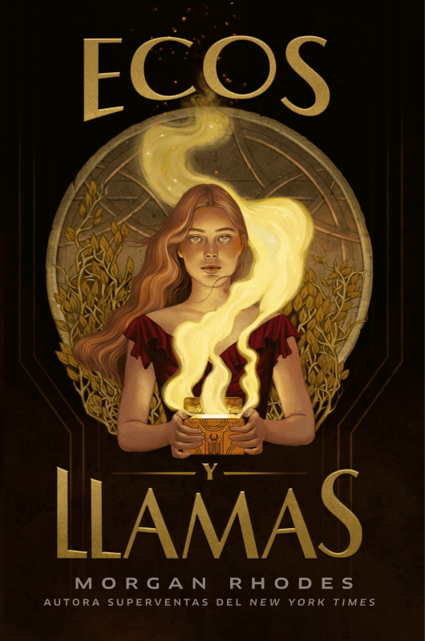
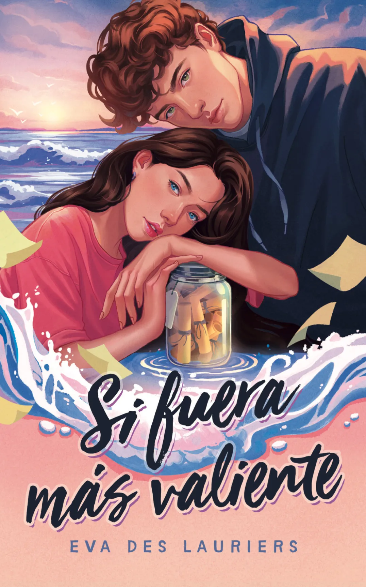

Inicio
Libros
Autores
Merchandising
Noche de Verbena
Prepárate para la última verbena del verano.
Más información

Libros
Corona de Mentiras
Más información

Leyendas y Mentiras
Más información
UN DESTINO DE IRA Y FUEGO
Más información

ECOS Y LLAMAS
Más información
UNA MALDICIÓN DE SANGRE Y PIEDRA
Más información

SI FUERA MÁS VALIENTE
Más información
EL DESPERTAR DEL FUEGO ETERNO
Más información
Video